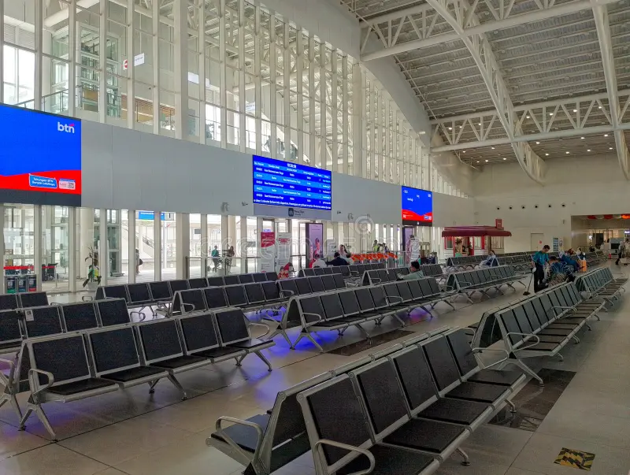

Áreas de Espera
Ubicadas en el hall central y plataformas. Contamos con asientos ergonómicos, puntos de carga USB y Wi-Fi gratuito de alta velocidad.
- Ubicación: Hall Central (Sector A), Andenes 1-8
- Horario: Abierto 24hs
- Servicios: Asientos ergonómicos, carga USB, Wi-Fi gratuito